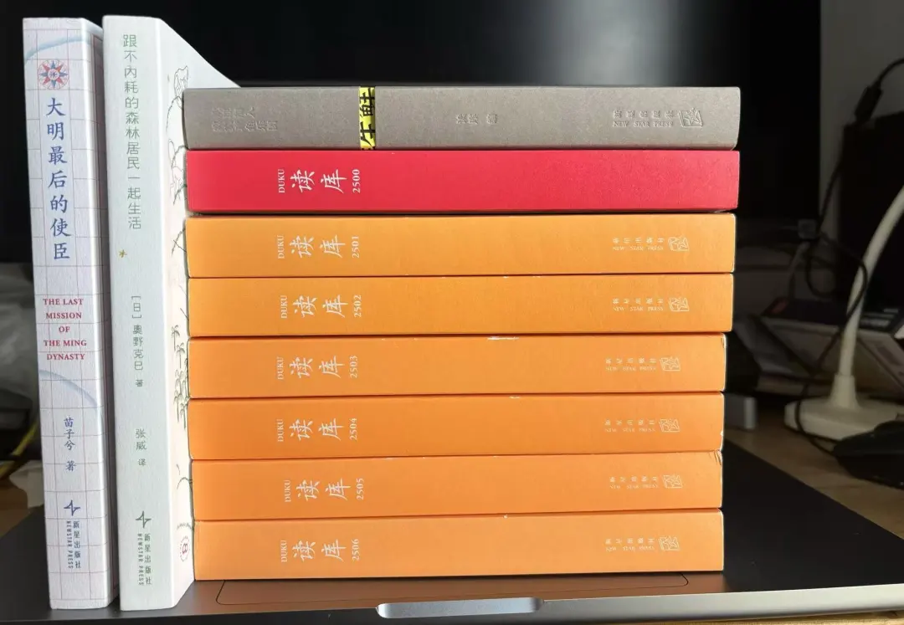

守护笨拙的阅读体验：2025 年阅读全记录
从 DeepSeek 春节爆火到现在还不到一年，然而人间一年 AI 十年，AI 能力发生了翻天覆地的变化。随着模型版本的快速迭代一次次吸引我们的眼球，也带来了排山倒海般的焦虑感。在今天把一本书丢给 NotebookLM 几分钟就能得到总结、大纲、干货、思维导图，甚至生成图文视频，只要你敢想没有 AI 给不了。在这样的时代，一字一句地读书，是不是显得有些老派，甚至有些笨拙了？
作为“老年登山协会会员”，我却比任何时候都更想守护这份“笨拙”。知识和信息获取虽然越来越容易，但这种原生态、“有机读书法"给的体验是 AI 不可替代的，宁可食无肉（其实也不可）不可不读书。
2025 年在分出很多时间做其他事情的前提下阅读量还能稳定保持实属欣喜了，从豆瓣数据来看，阅读图书 84 本。除了原有的车上厕上床上，传统“三上”主力阅读时间以外，今年挖掘出“半夜阅读时间”。作为长期受睡眠问题困扰者，今年给自己定了一个原则，“睡不着要么起来跑步要么起来看书，困了自然就想睡了”，因此才有微信读书中的半夜阅读记录和 6 点不到的跑步记录。
另一个原因来自 4 月份参加了微信读书 365 天阅读挑战，目标阅读 360 天 300 小时。班味十足的阅读方式刚开始让我有些焦虑，疯狂压榨碎片时间。不过现在回头来看焦虑大可不必，在保持轻松阅读的状态下完成打卡任务也毫无压力。
如同老农秋收后坐在谷仓里盘点一年的收成，我也依然要在辞旧迎新这个时间点保持这份仪式感。盘点今年读过的这些书，即是总结自己的阅读历程，记录和这些书内容之外的注脚；也是分享，期待和同好朋友交流探讨。
有些书阅读完即时留下的记录，有些则只有了了两句感受，尤其是文学作品。不管长短都是真实的触动。
2026 年最喜欢的十本书
虽然阅读全凭兴趣，不过喜好排名总有先后，还是要选出最喜欢的 10 本书。
- 《九诗心 : 暗夜里的文学启明》
- 《芯片简史 : 芯片是如何诞生并改变世界的》
- 《森林之歌》
- 《王赓武回忆录 : 家园何处是 & 心安即是家》
- 《我看见的世界 : 李飞飞自传》
- 《康熙的红票 : 全球化中的清朝》
- 《比山更高 : 自由攀登者的悲情与荣耀》
- 《明亮的夜晚》
- 《地心之旅 : 探索山洞、岩穴与地下世界》
- 《冷血》
2026 年完整阅读笔记
非虚构
-
徒步丝绸之路Ⅰ：穿越安纳托利亚
-
徒步丝绸之路Ⅱ：奔赴撒马尔罕
-
徒步丝绸之路Ⅲ：大草原上的风
-
徒步丝绸之路Ⅳ：有始有终 平铺直叙的游记，整个系列看下来跟着作者走完丝绸之路，穿越不同国家和不同文化、民族的人交流，但流水账的记录越看越乏味，最后能看完也只是遵循第四本的标题“有始有终”。
-
陌生的阿富汗 再版的老书，读起来却一点都不过时。少见的女性视角下的阿富汗游记。作者写这本书时塔利班刚下台，而现在你方唱罢我登场塔利班又回来了。
-
最后的观星人 : 天文探险家的不朽故事 “观星人”，听起来很浪漫的工作，而实际上却是要在极寒和孤独终坚守的苦差事。在自动化时代科技虽然能代替人做了大部分工作，解放了科学家提高了效率，但确实也少了一份仰望星空的浪漫。
-
登山物语
-
进入空气稀薄地带 : 登山者的圣经
-
比山更高 : 自由攀登者的悲情与荣耀 三本登山题材的作品，强烈推荐《比山更高》，读完书后的一段时间，还沉浸在网上延伸阅读书中的内容，从古早的论坛到B站小红书。不过在我看来，人类在大自然面前还是太渺小。对这些探险者还是有一些不理解的，如果能自己负责那算自己的选择，像《登山物语》中高家虎这种无知无畏者，因为鲁莽和无知出了事却需要别人投入资源甚至生命危险去救援，这就让人难以苟同了。
-
重燃文学之火 : 在阅读课上思考自我与社会 作为缺少严肃文学教育的我，一直都看不进严肃文学。在我看来有些经典文学作品的阅读难度不比微积分简单。这本书带我们进入美国校园高中生的文学课，观察学生如何接受文学作品及在文学作品中带来的成长。被这些老师和作品感动。
-
野泳去
-
念念远山
-
荒野之境
-
古道 自然文学是那种读起来很累，但一旦读进去就很容易进入心流状态，自然舒缓的文字，读起来沁入心脾，不自觉跟着文字融入自然，总之就是去读吧。而麦克法伦便是自然文学不可错过的作者，还有去年读过的《深时之旅》，适合一起全部读完。麦克法伦在几本书中多次提到《野泳去》的作者罗杰，他们是忘年交。
-
森林之歌 植物也有社交，它们通过根系与真菌连成巨大的地下网络，彼此连通、交流，形成森林的神经系统。在科普 Finding the Mother Tree 的同时，这本书另一条线记录作者自己成长和家族传承。女性学者的科研之路着实不易。
-
地心之旅 : 探索山洞、岩穴与地下世界 洞穴探险是一项可怕的探险活动，甚至比爬雪山潜水还要可怕。要面对黑暗与幽闭空间，随时可能遭遇地下生物对外来者的袭击，还可能有有毒气体、物理结构的变动所带来的危险。对普通人来说，这听起来就是一件非常可怕的事情。 而作者从小便对这种极限挑战深深着迷，并最终把它作为自己的研究方向，这种热忱令人膜拜。更重要的是，他通过文字，把我们带进那样一个普通人几乎无法触及的地下世界。感谢作者让我们透过他的经历，第一次看清那个独特、神秘、又迷人的地下天地。
-
车墩墩野事记 很有趣的一本小书，上海郊区车墩镇生活记录。在城市边缘，依然有生动的野趣。
-
我走不出我的黑夜 真实记录照顾阿尔茨海默症母亲的记录，人们常说，人老了以后会失去尊严，看着父母老去真是一件残忍而无力的事情。
-
倒转金字塔 : 足球战术史 一本老书，正如副标题所言，足球战术史。作为二十多年老球迷读得心潮澎湃，从19世纪足球在英国流行到现在成为世界第一大运动，足球战术从无到有，历经百年的发展和革新，贯穿整个足球的历史，有趣有料。 现代足球已经没有什么固定战术，战术是一个动态的概念，一支完美的球队是一个有洞察力的主教练加上有创造性和执行力的球员组成，很难说教练的战术和球星谁更重要。这也是为什么这么多优秀的主教练在换球队或换球员以后再也无法达到过去的高度。恰好看书的时候正值世俱杯，上一周还在全网猛吹把登贝莱调教成金球先生的恩里克，这不就被车子给按在地上摩擦吗。 当然了，主教练的工作也不止临场排兵布阵，更多还是日常管理，识人用人。 总之对于真球迷，要看门道，这本书绝对不容错过。
-
芯片简史 : 芯片是如何诞生并改变世界的 芯片的发明和发展历程，非常精彩引人入胜，尤其是前半部分，从真空管的发明到半导体研究再到集成电路，可以说看过最精彩的科技历史书。
-
可能的世界 《重走》是一本好书，但这本则是一些过去的文章拼凑而来的文集，阅读体验一般。
-
最后的棒棒 : 放下钢枪，拿起棒棒 有同名纪录片，贵在真实，在 B 站也能搜到很多成书和成纪录片之后的故事。
-
梦幻之街 : 歌舞伎町男公关俱乐部50年 这本书还挺有趣的，讲诉牛郎经营的发展史。震撼于风俗行业的体系化和日本人对风俗文化的接受度。
-
主权个人：如何在信息时代掌握自己的命运 有段时间在网络上很热的一本书，好像没有中文正式出版版本，流传的是网络翻译版本，忍不住来凑热闹。花了十几个小时读完，主题是随着信息革命的发展主权个人崛起，传统权力将转移到更小的团体甚至个人身上，加密货币技术让任何政府都无法夺取你的财富。为了论证这些观点进行了大量的讨论分析，涉及政治历史经济，有点难读。看起来很有道理，但成书几十年过去了，现在的世界格局和今年币圈发生的事情看起来好像很多观点也不太站得住脚。
-
疫苗竞赛 : 人类对抗疾病的代价 有个长辈亲戚是脊髓灰质炎受害者，无法独立行走，一张特制的凳子就是他的双脚。在我们这一代这个病基本灭绝。小时候经常在大人口中听到“疯狗病”发作时可怕的场景，也许大人是为了恐吓我们不要乱跑被陌生的狗咬到。现在也没人讲这样的故事。这一切都归功于疫苗的发展和普及。 本书讲述了脊髓灰质炎、风疹、狂犬病疫苗的研发和发展历程，非常激动人心的故事。BTW，今年流感疫苗打了吗？没打的话明年可得抓紧了，动员全家打起来。
-
天生就会跑2.0 《天生就会跑》是我个人2024年的年度图书，也是这本书让我放弃足球重拾跑步，越跑越上瘾，今年也跑了1800km。无意发现这本书居然出了2.0，读下来发现其实并不是第一本的延续而是让另一个故事，和一头驴一起跑步的故事。赛驴跑，也就是赶着驴一起越野跑，没想到这世上还有这么朋克的越野跑，太有趣了。同时作者在和驴相处和人相处的时候又有很多温情故事。还是很喜欢，推荐。
-
无罪辩护 : 律师手记 刑事辩护律师的真实案件记录。一口气读完 ，非常压抑。法治路漫长而艰难，强烈推荐。
-
园丁与木匠 : 顶级心理学家教你高手父母的教养观 今年读过的唯一一本育儿书。道理都懂啊，可是社会有社会的规则，在这个体系下普通人要“出人头地”还是得遵守这个规则。作为父母真的很难平衡。
人物
-
猫鱼 阅读的过程中忍不住跟好几个朋友感叹“陈冲的文字真好啊”，直率、真实、细腻，可能是最会写的明星。
-
我看见的世界 : 李飞飞自传 感动，天赋和努力再加上家庭的全力托举，塑造了今天李飞飞。抛开自媒体给的那些 AI 教母之类浮夸 title，这才是真实的李飞飞。
-
王赓武回忆录 : 家园何处是 & 心安即是家 非常喜欢，个人的小历史，时代的大历史，海外华人的身份认同以及身处大时代变革中个人的奋斗选择。特别感谢杨老师赠书。
历史
-
康熙的红票 : 全球化中的清朝 本书出现在去年很多人的年度图书中，确实是好书。按照过往的认知，清朝最大的标签是闭关锁国。但在这本书中，发现康熙对西方文化和技术居然如此开明和包容。可惜好景不长，雍正以后就开始走上闭关锁国之路。
-
官家的心事 : 宋朝宫廷政治三百年 全篇是堆史料，实在是读不下，弃了。
-
亚洲史概说 日本史学视角的亚洲史，作者是“交通史观”创建者，他认为交通是连接不同文明、推动历史发展的关键力量。西亚的文明成果（艺术、科技、宗教），通过“交通”这条纽带持续向东传播，深刻影响了东亚（中国和日本）的历史进程。总之值得一读，提供了看历史不同的视角。
-
三国前夜 : 士大夫政治与东汉皇权的崩解 精彩，全面复盘三国前夜，站在现代视角去看历史。
-
有为 : 汉武帝的五十四年 人们总爱谈论秦皇武帝唐宗宋祖这些有为君王。然而如书中结尾“他是一个绝对有作为的帝王，但假如活在他的时代，我希望他能够少点作为。” 回到历史现场，你我等普通人大概率只会出现在“战死 xx 万，饿死 xx 万”的数字当中。历史是强人们的游戏，我只想 love & peace。
-
卧榻之侧 : 赵匡胤、李煜和他们的时代
-
崖山 “卧榻之侧，岂容他人酣睡。”读起来何等霸气，但放在历史的王权更迭中却充满生死存亡。唐宋之间的“历史垃圾时间”，城头变幻大王旗，各路英豪你方唱罢我登场。兴亡、覆灭只在一念之间。但历史总是轮回。今天那个欺压孤儿寡母的开国君，命运翻转，他的子孙很快也会成为被取代的孤儿寡母亡国君。雕栏玉砌应犹在，只是朱颜改。问君能有几多愁？ 恰似一江春水向东流。 “崖山之后无中国”这句话听起来十分悲壮，但当真正撕开历史的层层面纱，发现背后并非如此单一。历史很复杂，人性更是复杂。作为一个带着中华民族底色的人读到这里，不免感到义愤：昏君、弄臣、党争、伐异……南宋灭亡，其实并不稀奇。可怜文天祥那一片丹心照汗青，令人唏嘘。 难得看到从蒙元的视角审视南宋的覆灭。还原一个更立体、更真实的历史。 这两本的作者是张明扬，也推荐作者的另外两本《入关》《弃长安》。和很多历史书籍关注王朝的兴起不一样，他的作品都在关注王朝的没落，或许这样的历史视角更有趣。
-
说三分 : 三国故事的三重叙事 挺有意思，断断续续读了一个多月，边读还边和孩子聊聊三国，但他仅有的三国知识几乎来自三国杀，大部分时间还是给他讲，希望把他兴趣提起来自己去读原著。
-
漫长的战败 : 日本的文化创伤、记忆与认同 日本社会对待二战的记忆是割裂的，作者概括为三种典型模式，即施害者、受害者和英雄，并分析这三种模式的发展脉络。高市早苗上台后，中日关系紧张，特别适合读这本书。
虚构
-
卡拉马佐夫兄弟
-
罪与罚 开年读《卡拉马佐夫兄弟》年尾读《罪与罚》，读陀思妥耶夫斯基可太累了。冗长的俄语名字，大段大段的对话与心理独白都需要很大的心力，既要有心理上耐得住也要体力上的坐得住。每次读完身体就像跑完马拉松一样虚脱。人性的恶与救赎，人格的分裂与撕扯，精神的信仰与虚无…这是来自精神上被暴风雨的洗礼。
-
无条件投降博物馆 感觉内容比较散，读起来比较跳跃。
-
陶渊明也烦恼 : 给家长的传统文化启蒙课
-
九诗心 : 暗夜里的文学启明 《九诗心》是豆瓣年度图书，有多好无需多言，在我们的小读书群几乎人均读过。跟着黄晓丹解读九位诗人的作品和人生，穿越时空进入诗人的内心世界。唯一比较出戏的是黄老师迷妹般对陶渊明的称呼“渊明”，哈哈。同推荐 《诗人十四个》。
-
爸爸的文学课 受益匪浅，别人的爸爸又厉害又有耐心教，作为一个不会教也没耐心的爸爸实在是惭愧。这本适合和黄老师的《陶渊明也烦恼》一起读。
-
窗边的小豆豆 陪孩子读的书，非常感动。在孩子读完的那个晚上，关灯以后我多嘴问了一句看完了什么感受，结果他爆哭了半个小时，睡眠时间 -30min。
-
野猪渡河
-
猴杯
-
乌暗暝 张贵兴的书之前读了两次只读了个开头便放弃了，很难接受这份来自雨林的生猛。这次终于读进去了，并且上头了。真好看啊，文字密度好大，读得我好累啊。顺势又把黄锦树的小说集《乌暗暝》也读了，读黄锦树的作品总感觉在半梦半醒之中，晕乎乎的醒来一身汗。马来西亚湿热腥膻的气息，滋养出了中文的另一个分支，强烈推荐。
-
沧城 一般，一个俗套的故事强硬套在一个边境小城女性身上。
-
间谍先生：豺狼的日子
-
间谍先生：黑色宣言
-
间谍先生：上帝的拳头
-
间谍先生：万无一失的杀手 其实刚开始有点看不进去的，一直觉得有些书要在合适的年龄看，比如高中非常痴迷的金庸现在一点都看不进去，福赛斯也是这样的。不过今年也算找到合适的时间，在贵州旅游期间利用排队、坐车、休息所有碎片时间倒是读进去了，但随着旅行结束回到正常生活节奏以后，再也看不进去了，所以也就看了这四本。
-
我们的箱根驿传 箱根题材热血是少不了的。和《强风吹拂》不一样的是这本采用双线叙事，一条线是电视台直播团队，另一条线是学联队，也就是从落选队伍中选出的精英队，他们虽然参加比赛但是不会被记录排名。两条线都充满冲突和转折，相信很快就会影视化。
-
桃花源没事儿 说实话这本很一般，“马伯庸公式”痕迹很深。
-
西线无战事
-
西线归来 战争是那么残酷，可永远都有人在叫嚣战争。相对于《西线无战事》 直面战争的残酷，作为续集的《西线归来》更是战后绵长且沉重的折磨。从战场下来的战士面对社会比只能求单纯活着就好了的战场更无所适从。
-
将军族 因为读了《日暮时分》，作为对东亚左翼作家对照而阅读，是老派作家的感觉。
-
日暮时分
-
素食者
-
少年来了
-
明亮的夜晚
-
你的夏天还好吗？
-
滔滔生活
-
外面是夏天 从韩江获得诺贝尔开始陆陆续续读了一些韩国作品，但韩江说实话我不太能读得进去，可能是太严肃了？在放弃她其他更多作品之后，群友推荐的《明亮的夜晚》又把我拉回到韩国文学，《明亮的夜晚》崔恩荣笔下四代女性在动荡时代的互相扶持的故事，贯穿整个韩国近代史，苦难中不失温暖。金爱烂对都市普通人日常生活文学化的细致观察。以及第一代作家黄晳暎《日暮时分》中让我看到东亚人的苦难几乎都是相通的。
-
甲申前夜·大晦 文武双全刘先生的作品，刚猛、暗黑，末世感十足。但最后那个超自然的鬼有点出戏，扣一星。明末的颓败和年底网络上神经悼明让人觉得黑色幽默。
-
冷血 两个杀手逃亡之路，精彩且细致，把人性的复杂性描绘得淋漓尽致。
读库
欢迎加入寂寞章鱼乐团 一年六本生鲜看下来感觉选题不太稳定，跨度比较大，喜欢的很喜欢，不喜欢的看不进。所以今年也就没订了。

-
读库 2500
-
读库 2501
-
读库 2502
-
读库 2503
-
读库 2504
-
读库 2505
-
读库 2506 今年因为绝大部分在微信读书打卡，2500 和 2501 在打卡之前完成，2502 - 2506 全部在 12 月份突击完成。在自媒体爆发的今天，读库主打的真实故事书写在网上可以看到大量内容，甚至更真实。不过有些深度内容独特视角还是只能在读库才能看到，这也是10 多年还保持订阅的原因。
-
大明最后的使臣 一个很悲壮的故事，覆巢之下的南明，一位耶稣会神父和中国侍卫远去罗马出使求援。不过不太习惯半虚构半历史的写法。
-
跟不内耗的森林居民一起生活 标题和清新的装帧看起来就很舒服。讲生活在南太平洋加里曼丹岛的狩猎采集族群普南人与现代人不一样的生活，他们不内耗没有焦虑，也没有现代人的道德枷锁和反思，过着松散的集体生活，自由自在。但我觉得只能说拓展了一个看世界的角度，对作为现代人的我们并没有什么参考价值。
一年又一年，梳理完这些内容，2025 年的阅读之旅也要划上句号。回望这一年 AI 一日千里，世界依旧嘈杂；头发日渐稀少，生活周而复始。庆幸的是还有阅读，这所坚实的避难所。 2026 步履不停，且读，且跑，且生活。